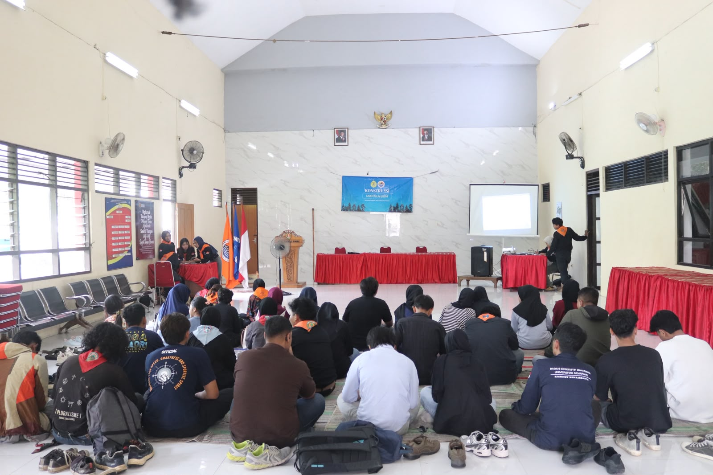
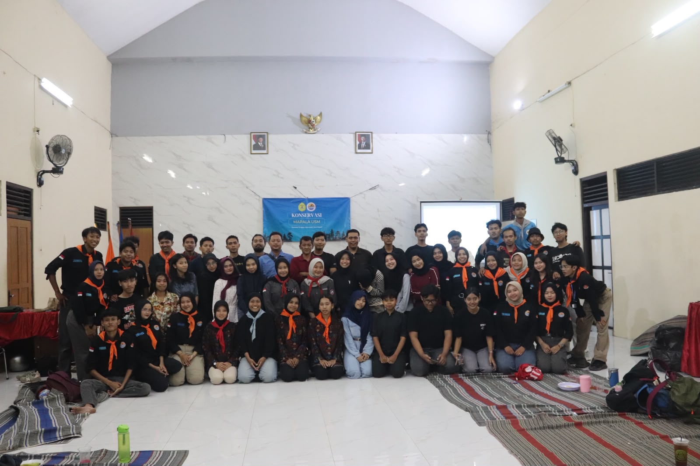
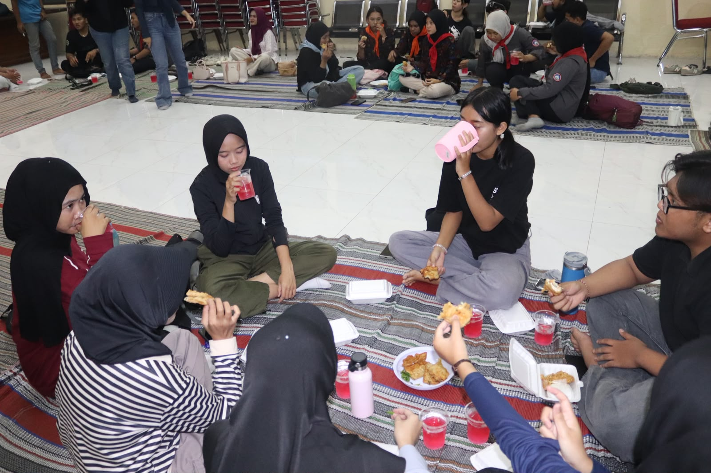
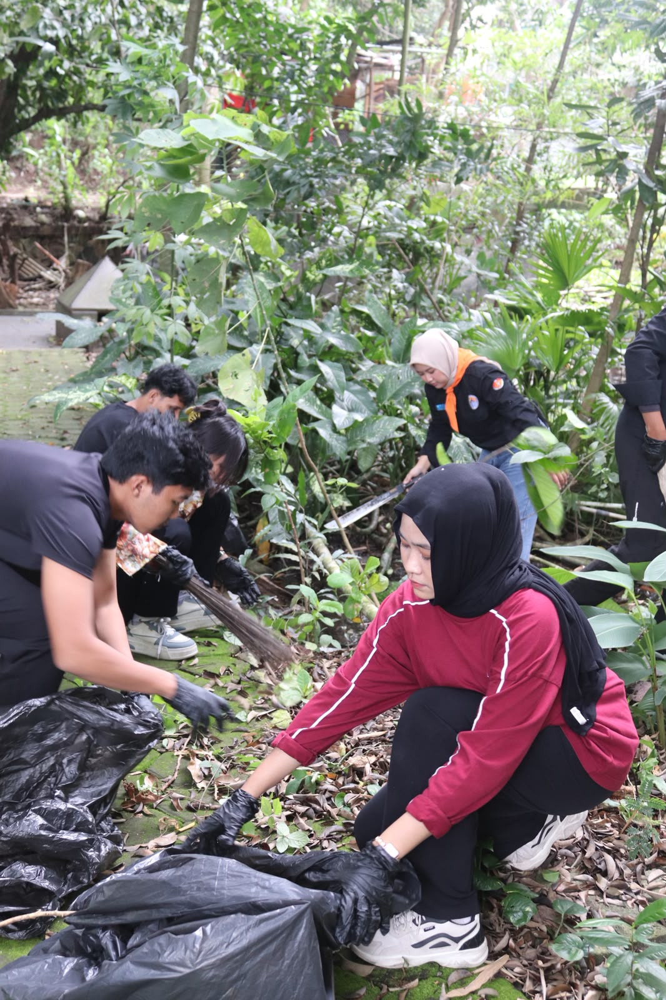

SEMARANG — Mahasiswa Pencinta Alam Universitas Semarang (MAPALA USM) menyelenggarakan kegiatan Konservasi di Hutan Kota Taman Budaya Raden Saleh (TBRS), Semarang, pada Sabtu, 7 Maret 2026. Kegiatan bertema “Menjaga Sumber Kehidupan, Merawat Masa Depan” ini menghadirkan serangkaian agenda, mulai dari talk show lingkungan, aksi bersih kawasan hutan kota, hingga penanaman pohon sebagai upaya nyata MAPALA USM dalam mendorong kesadaran kolektif masyarakat perkotaan terhadap pentingnya menjaga keberadaan ruang terbuka hijau di tengah kota.

Latar Belakang
Perkembangan kota Semarang yang semakin pesat telah membawa konsekuensi serius terhadap kelestarian lingkungan. Banyak alih fungsi lahan hijau, polusi udara, menurunnya kualitas air, serta meningkatnya suhu perkotaan (urban heat island) kini menjadi persoalan yang semakin nyata dan tidak dapat diabaikan.
Di tengah krisis lingkungan ini, hutan kota hadir sebagai solusi strategis yang berfungsi sebagai paru-paru kota, penyerap karbon, pengendali iklim mikro, resapan air, serta ruang publik yang menyehatkan bagi warganya. Namun, kesadaran masyarakat dan pemangku kebijakan terhadap peran vital hutan kota masih sangat rendah. Banyak hutan kota yang terabaikan, beralih fungsi, atau sekadar dipandang sebagai taman biasa tanpa memahami fungsi ekologisnya yang jauh lebih dalam.
MAPALA USM sebagai organisasi pencinta alam yang memiliki tanggung jawab moral terhadap kelestarian lingkungan memandang bahwa kegiatan konservasi tidak cukup hanya dilakukan di kawasan hutan lindung. Konservasi juga harus menyentuh wilayah perkotaan dan dapat diwujudkan melalui edukasi serta penyadaran publik yang berkelanjutan.
Talk show lingkungan dipilih sebagai metode dialog interaktif yang mempertemukan akademisi, praktisi, pemerintah, dan masyarakat untuk menggali gagasan serta solusi kolaboratif dalam mengoptimalkan peran hutan kota. Mengusung tema “Menjaga Sumber Kehidupan, Merawat Masa Depan”, kegiatan ini menegaskan bahwa hutan kota bukan sekadar ruang hijau, melainkan sumber kehidupan bagi masyarakat perkotaan. Menjaga keberadaannya berarti merawat masa depan generasi mendatang.
Kegiatan ini juga berkontribusi terhadap pencapaian Sustainable Development Goals (SDGs), khususnya pada tiga pilar utama:
Sebagai bagian dari civitas akademika Universitas Semarang, MAPALA USM hadir untuk mengaktualisasikan Tri Dharma Perguruan Tinggi melalui aksi nyata yang relevan dengan problematika lingkungan perkotaan. Kegiatan ini diharapkan mampu membangkitkan kesadaran kolektif, mendorong perubahan kebijakan, dan menginspirasi gerakan hijau baru di Kota Semarang.

Sesi Talk Show: Dialog Interaktif Lintas Elemen
Sesi talk show lingkungan menjadi salah satu agenda utama yang berlangsung di dalam ruangan sebelum kegiatan lapangan dimulai. Forum ini menghadirkan diskusi mendalam mengenai kondisi aktual hutan kota Semarang, tantangan yang dihadapi dalam pelestariannya, serta gagasan-gagasan inovatif yang dapat diterapkan secara kolaboratif antar berbagai elemen masyarakat.
Para peserta yang terdiri dari mahasiswa, anggota komunitas lingkungan, dan masyarakat umum terlibat aktif dalam sesi tanya jawab yang berlangsung konstruktif. Berbagai persoalan lingkungan dibahas secara terbuka, mulai dari alih fungsi lahan hijau, pengelolaan sampah kawasan hutan kota, hingga strategi pelibatan masyarakat dalam upaya konservasi jangka panjang.

Aksi Konservasi: Bersih Lingkungan dan Penanaman Pohon
Usai sesi diskusi, peserta bergerak menuju kawasan Hutan Kota TBRS untuk melaksanakan aksi konservasi secara langsung. Kegiatan diawali dengan aksi bersih lingkungan, di mana para peserta secara bergotong royong membersihkan area hutan kota dari sampah dan dedaunan kering yang menghambat pertumbuhan flora di sekitarnya. Semangat dan antusiasme peserta terlihat jelas dalam setiap gerakan mereka, mencerminkan kepedulian nyata terhadap kelestarian alam perkotaan.

Puncak dari rangkaian kegiatan lapangan adalah aksi penanaman pohon. Dengan penuh kebanggaan, para peserta menanam bibit-bibit pohon di area yang telah ditentukan di kawasan TBRS. Kegiatan ini bukan sekadar simbolis, melainkan merupakan komitmen nyata bahwa setiap individu memiliki andil dalam menjaga keberlangsungan ekosistem perkotaan untuk generasi yang akan datang.

Hasil dan Capaian Kegiatan
Hasil Kegiatan
- Meningkatnya pemahaman peserta mengenai pentingnya menjaga dan mengelola hutan kota sebagai bagian dari keberlanjutan lingkungan.
- Terbangunnya diskusi yang konstruktif antara narasumber dan peserta mengenai solusi atas permasalahan lingkungan perkotaan.
- Terjalinnya kolaborasi antara mahasiswa, pemerintah, dan masyarakat dalam upaya pelestarian lingkungan di wilayah perkotaan.
- Munculnya gagasan atau rekomendasi terkait pengelolaan dan pengembangan hutan kota di Semarang.
Capaian Target
- Terselenggaranya kegiatan talk show lingkungan dengan partisipasi aktif mahasiswa, komunitas, dan masyarakat umum.
- Tercapainya peningkatan kesadaran lingkungan di kalangan peserta mengenai pentingnya hutan kota.
- Terbangunnya jejaring kerja sama antara organisasi mahasiswa, komunitas lingkungan, dan pihak terkait dalam menjaga kelestarian hutan kota.
- Terbentuknya komitmen bersama untuk menjaga dan merawat ruang terbuka hijau di Kota Semarang.
Kesimpulan
Kegiatan Konservasi MAPALA USM yang dilaksanakan pada 7 Maret 2026 di Hutan Kota Semarang telah berjalan dengan baik dan memberikan dampak positif bagi peserta. Kegiatan ini berhasil meningkatkan pemahaman dan kesadaran masyarakat, khususnya mahasiswa, mengenai pentingnya peran hutan kota dalam menjaga keseimbangan lingkungan perkotaan.
Selain itu, kegiatan ini juga mampu menjadi wadah dialog yang konstruktif antara berbagai pihak, serta mendorong terjalinnya kolaborasi dalam upaya pelestarian lingkungan. Meskipun terdapat beberapa kendala teknis seperti miskomunikasi panitia, kurangnya koordinasi peserta, dan keterbatasan alat, hal tersebut dapat menjadi bahan evaluasi untuk pelaksanaan kegiatan selanjutnya.
Secara keseluruhan, kegiatan ini telah mencapai tujuan yang diharapkan dan memberikan kontribusi nyata dalam mendukung upaya pelestarian lingkungan serta pembangunan kota yang berkelanjutan di Kota Semarang.
“MAPALA Universitas Semarang berharap semangat menjaga sumber kehidupan melalui pelestarian hutan kota dapat terus tumbuh di tengah masyarakat dan menjadi langkah nyata dalam mewujudkan lingkungan perkotaan yang lebih hijau, sehat, dan berkelanjutan bagi generasi mendatang.”